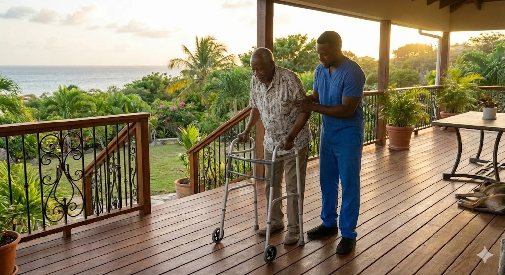

Un défi territorial qui s'accélère
À l'horizon 2030, la Guadeloupe comptera environ 28 000 personnes âgées en situation de dépendance, soit une hausse significative par rapport à 2017.

Cette évolution implique :
- une augmentation des besoins d'accompagnement,
- une pression accrue sur les aidants familiaux et les salariés aidants,
- un risque de ruptures de parcours,
- une nécessité de structurer des réponses territoriales innovantes.
Face à ces enjeux, les dispositifs actuels restent souvent fragmentés, insuffisamment coordonnés et peu lisibles pour les publics concernés.
Les établissements hospitaliers et les services administratifs, déjà fortement mobilisés, font face à des tensions liées à la croissance des besoins et à la complexification des parcours.
Dans ce contexte, la création de nouvelles réponses adaptées est nécessaire pour anticiper les besoins futurs et sécuriser les trajectoires de vieillissement.
Sans réponse anticipée et coordonnée, le coût humain, social et financier augmentera considérablement.
Emplois grand âge
Une réponse intégrée au service du territoire
S'AIDER PLUS Village propose une réponse intégrée : un tiers-lieu hybride, à la croisée du social, de la santé et de l'entreprise.
Prévention
Ateliers, parcours de sensibilisation, actions collectives.
Accompagnement
Suivi social, coordination des parcours, soutien aux aidants.
Répit & bien-être
Espaces dédiés, activités adaptées, solutions innovantes.
Les étapes de la réalisation du projet
Survolez chaque étape pour découvrir les objectifs, partenaires à mobiliser et livrables associés.
Amorçage & diagnostic territorial
Rassembler les associations d'aidants et maisons d'accueil autour du projet.
Objectifs
- Cartographier l'offre existante et les besoins non couverts
- Constituer un comité de préfiguration
- Finaliser l'étude d'opportunité
Partenaires à mobiliser
Alignement institutionnel & modèle économique
Rencontrer les acteurs publics et privés pour centraliser le besoin.
Objectifs
- Inscrire le projet dans le PRS et le schéma autonomie
- Obtenir un soutien de principe des financeurs publics
- Finaliser le modèle économique et le plan de financement
Partenaires à mobiliser
Structuration juridique, foncière & financière
Élaborer avec les différents acteurs la structure du complexe.
Objectifs
- Créer la holding, l'association et la SAS d'exploitation
- Sécuriser le foncier via bail emphytéotique administratif
- Déposer les dossiers d'investissement et d'appels à projets
Partenaires à mobiliser
Préfiguration opérationnelle & Compagnon
Créer le Compagnon en fonction des cahiers des charges des services publics et de la demande des aidants.
Objectifs
- Réaliser les travaux et aménagements
- Développer et expérimenter le Compagnon (physique + numérique)
- Lancer la phase pilote puis l'ouverture officielle